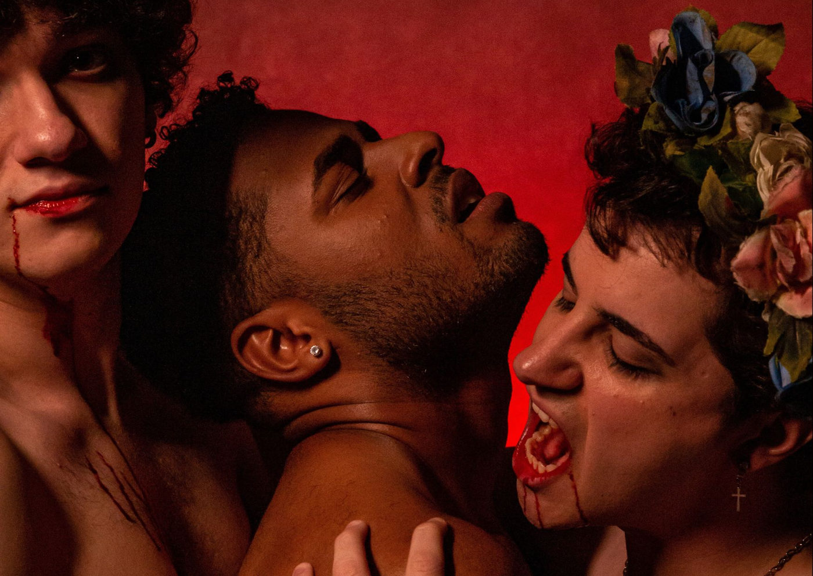

Foto — João Paulo Belantini
Teatro
Espetáculo musical de fantasia e romance LGBT volta aos palcos em nova temporada
“O Bosque dos Sonâmbulos” é um musical adaptado do curta metragem de mesmo nome de Matheus Marchetti que foi lançado em 2017, para a criação dele, o autor se in…